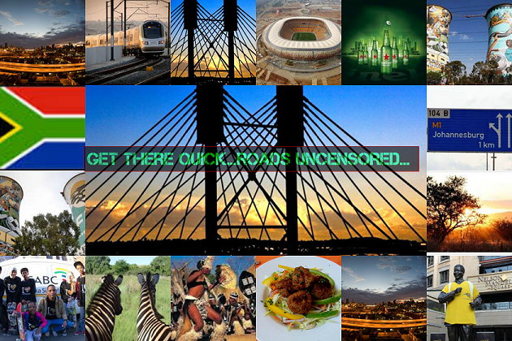

gtQ Routing Service - RoadsUncensored
Home Page
gtQ Routing
Places of Interest
About
Explore City of Johannesburg
Get around, meet a local and get to know the Gauteng culture

City of Johannesburg
Nelson Mandela Square
GauTrain Station